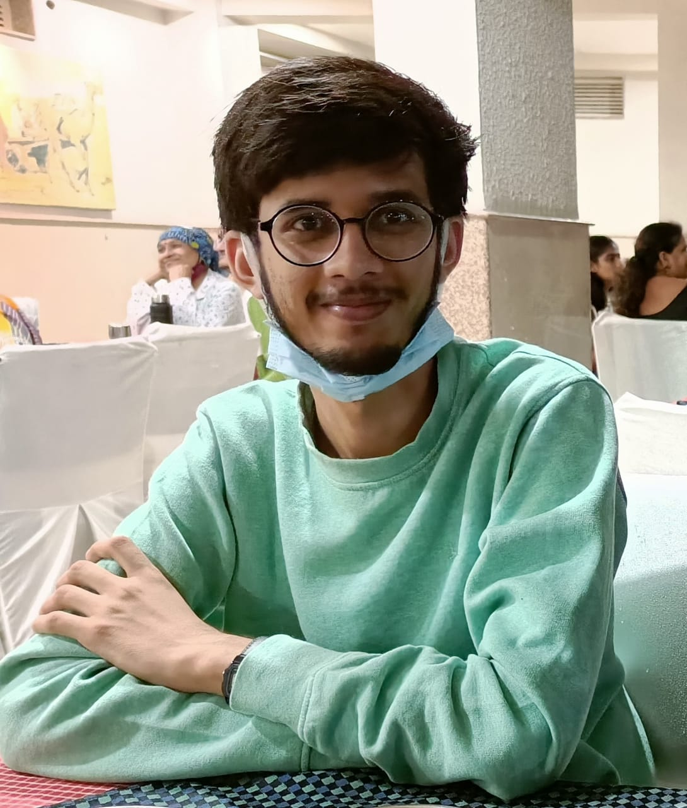

Hello there!
I am Chaitanya Chawak.
Welcome to my website. Feel free to explore around. A good place to start is this.
(Sorry for the extremely lame intro lol. Promise I'll change it soon.)
About Me

Halo! I am a 4th Year Undergraduate student enrolled in the BS-MS Dual Degree Programme at the Indian Institute of Science Education and Research (IISER), Tirupati. My major subject is Physics and I am an astrophysics enthusiast.
I love puzzlehunts and solving puzzles in general. Participating in the MIT Mystery Hunt is one of my life goals. Usually open to healthy discussions about almost anything. So hit me up for some interesting conversations! :)
I hope my taste in music, movies, books (and pop-culture in general) is not terrible. You can check it out here and even suggest anything interesting.
Here are images of some of the things that I love.
I am currently in the 8th semester of the 5 year integrated BS-MS programme at IISER Tirupati. In the 1st and 2nd year I studied the basics of Physics, Chemistry, Math, Biology, and in the 3rd and 4th year I had all elective courses where I chose Physics as my Major subject. Following are the courses which I took in each of the semesters, with the Math and Physics courses in bold.
Semester 1:
- Introductory Biology I: Basic Principles
- Biology Lab I: Basic Biology
- General Chemistry
- Mathematical Methods
- Introduction to Discrete Mathematics
- World of Physics I: Mechanics
Semester 2:
- Introductory Biology II: Genetics and Molecular Biology
- Biology Lab II: Biochemistry and Molecular Biology
- Physical Chemistry
- Chemistry Lab I
- Critical Reading, Writing and Communication
- Single Variable Calculus
- Linear Algebra and Applications
- Waves and Optics
- Physics Lab I
Semester 3:
- Foundations of Biology III: Evolution and Ecology
- Biology for Society
- Inorganic Chemistry
- Chemistry Lab II
- Computational Methods
- Multivariable Calculus
- Foundations of Physics III: Electricity and Magnetism
- Physics Lab II: Electricity, Magnetism and Optics
Semester 4:
- Introductory Biology IV: Biology of System
- Organic Chemistry
- Chemistry Lab III
- History of Science
- Probability and Statistics
- Basic Structures in Mathematics
- Foundations of Physics IV: Quantum Physics
- Physics Lab III
Semester 5:
- Data Science I
- Classical Mechanics
- Electrodynamics
- Quantum Mechanics I
- Mathematical Methods in Physics
- Astrophysics
Semester 6:
- Statistical Thermodynamics
- Data Science II
- Quantum Mechanics II
- Optics
- Solid State Physics
Semester 7:
- Forensic Science
- Elementary Number Theory
- Advanced Statistical Mechanics
- Atomic and Molecular Physics
- Experimental Methods in Physics
- Computational Methods in Physics
Semester 8:
- Nonlinear Dynamics
- Nuclear and Particle Physics
- Gravitation and Cosmology
- Advanced Physics Lab IV
- Simulation and Modelling
Some of the minor projects which I also did during my academic years are:
- Galaxy Profiling : Worked on a Python project to extract the galaxy profiles from their images using a deep-learning ‘captioning’ model (Moment 0, Moment 1 and Moment 2 maps). Involved use of modules like Numpy, Scipy, Astropy, Matplotlib, PyTorch among others.
- Quantum Cloning : (pdf) [As a part of Continuous Assessment in Sem 6, 2021 supervised by Dr. Sambuddha Sanyal (IISER Tirupati)] Basics of Quantum Cloning like the No-Cloning theorem were discussed along with designing and working of quantum cloning machines like the universal quantum cloning machine, phase-covariant cloning machine, etc. The teleportation scheme, telecloning, various applications, recent developments, and future possibilities in this field are also be described.
- Deep Learning for Video Game playing : (pdf) [As a part of Continuous Assessment in Sem 6, 2021 supervised by Dr. Debasish Koner (IISER Tirupati)] Discussed the method of application of Deep Learning for classifying and playing different genres of Video
Games.
- Computational Quantum Mechanics : [As a part of Continuous Assessment in Sem 5, 2020 supervised by Dr. Sambuddha Sanyal (IISER Tirupati)] Wrote python code for various problems in Quantum Mechanics (from the book "Computational Quantum Mechanics" by Joshua Izaac and Jingbo Wang) like the Simple Harmonic Oscillator (solving the differential Schrodinger equation), Quantum Harmonic Oscillator, Infinite Square Well potential and finite difference matrix construction. Used the Numpy, Scipy, Matplotlib python packages
- Gravitational Lensing : (pdf) [As a part of Continuous Assessment in Sem 5, 2020 supervised by Dr. Jessy Jose (IISER Tirupati)] Briefly mentioned about the discovery and the theory of Gravitational Lensing along with its various types and its significance in obtaining information about far away objects.
- Noether's Theorem : (pdf) [As a part of Continuous Assessment in Sem 5, 2020 supervised by Prof. G. Ambika (IISER Tirupati)] Discussed the translational, rotational, and time translation invariances which result from the symmetry of a system. Also its applications in Field Theory, and the derivation of the LRL vector along with the lesser known Second Theorem of Noether are described.
- Distance Estimation to Galaxies : (pdf) [As a part of Continuous Assessment in Sem 5, 2020 supervised by Dr. Jessy Jose (IISER Tirupati)] Estimated the distance to the IC348 nebula, which lies in the Perseus constellation, from the Sun. Made use of the parallax and parallax error data obtained from the GAIA database. The Aladin Sky Atlas was used to locate the nebula and estimate its radius in arcseconds.
Email : chaitanyachawak@students.iisertirupati.ac.in
Twitter : https://twitter.com/chaitanyachawak
This is the miscellaneous section. Will update soon.
Music: These are some the astists that I frequently listen to
- Jacob Collier
- Linkin Park
- Twenty One Pilots
- Of Monsters and Men
- Imagine Dragons
- The Script
- Radwimps
- AJR
- Bo Burnham
- Daft Punk
- Walk Off The Earth
Movies: My thoughts about the movies are in the bracket
- Perfect Blue (A Psychological Kablooie!)
Books: mamamia
- The Picture of Dorian Grey (ongoing)
(Began updating: 05.12.2021 ; Last update: 09.12.2021)